| Скачать Roblox для Windows 10/11 |  |
| Скачать Roblox для Windows 8 | |
| Скачать Roblox для Windows 7 | |
| Скачать Roblox для Windows XP |
Роблокс на любой компьютер или ноутбук
В Roblox нет единой сюжетной линии или какой-то единой цели, однако в нем есть набор правил, которых нужно придерживаться: например, нельзя убивать игроков в тех мирах, где это не предусмотрено изначально. Большинство плейсов довольно дружелюбные, поэтому рейтинг приложения согласно возрастной дифференциации и маркировке 7+. Загрузка доступна как на компьютер с любой версией Windows, так и на мобильный телефон, планшет. Работает эта программа под Android или iOS. Также она доступна на игровой приставке Xbox вне зависимости от ее версии. Само по себе приложение бесплатное, еще и поэтому с загрузкой не возникнет никаких лишних проблем.
Если вы используете компьютер или ноутбук достаточной мощности, то игра может запуститься даже без какой-либо специальной установки. Вам потребуется только собственный браузер, причем, неважно, какой именно. Однако большинство пользователей считает, что через приложения играть намного удобнее, приятнее и комфортнее. Имейте в виду, что интерфейс игры англоязычный, поэтому если не дружите с языком, то придется подучить его перед тем, как начинать взаимодействовать в чужих плейсах. С другой стороны, не забывайте, что с софтом справляются даже малолетние дети, основная часть пользователей — ребята до 14-15 лет. Так что не придется обсуждать ничего сложного, а все слова заучиваются крайне быстро.
Возможности и преимущества Roblox
Множество жанров игр
Играть с друзьями
Создавать свои миры
Для всех устройств
Как установить Роблокс на пк:
Запуск программы происходит с помощью распаковщика OpenBox
Запустите файл.
Ознакомьтесь с информацией и нажмите "Далее".
Нажмите "Далее", или снимите галочки с рекомендуемого ПО и нажмите "Далее". Если снять все галочки, рекомендуемое ПО не установится!
После нажатия далее, произойдет установка.
Roblox для версий windows:
Начинающим рекомендуется осмотреть возможности плейсов, а затем начать с одного из них. Самый безопасный это Adopt Me! — там не придется ни с кем сражаться, устраивать гонки или попадать в опасные приключения. Это просто плейсы, где потребуется приютить виртуального питомца, а затем за ним ухаживать. Такие миры комфортные и уютные, дружелюбные к пользователям, поэтому они рекомендованы новичкам. Как только освоитесь в этой современной версии Тамагочи, переходите к более сложным плейсам.
нашла наконец то скачала за минуту!
интересно получать новые навыки и умения, играю в симулятор качка 0))
я удивлен
Легко грузанул и погрузился в виртуальный мир на любой вкус и интерес )))
всё работает, спасибо.